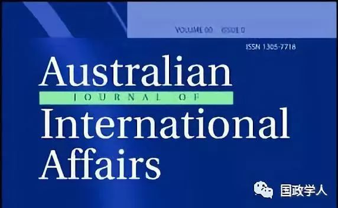

收录于合集

简 介
【 作者 】
Thomas Wilkins ，悉尼大学、伯明翰大学国际安全高级讲师，专门从事安全研究和战略研究，特别强调亚太地区的研究。
【 编译 】
陈舜波
【 来源 】
Thomas Wilkins, The New ‘Pacific Century’ and the rise of China: an international relations perspective, Australian Journal of International Affairs Vol. 64, No.4, pp.381-405, August 2010

Australian Journal of International Affairs ，成立于1946年，是澳大利亚国际事务研究所的期刊，也是澳大利亚在这一领域的顶尖学术期刊。
【 校对 】蔡宇 杨洋
【 审核 】李代霓
摘要
“太平洋世纪”（或“亚太世纪”）的重新崛起以及“中国崛起”等一系列重要的国际关系学科相关问题都与“亚太世纪”的概念化相关。作者首先创造了一个“太平洋世纪”的全新分析框架，来设定和编纂“太平洋世纪辩论”的参数；其次，文章涉及了当前国际关系中有关传统/理性主义与批判/反思主义方法之间的“大辩论”，并将它们与以中国领导的“新太平洋世纪”的概念并列使用；第三，作者谈到了“中国崛起论”。作者通过以上三个辩论的协同作用，对“太平洋世纪”的概念进行批判性分析，探讨了“太平洋世纪”这一概念是如何作为一种思想和物质双重因素综合体的。换句话说，“太平洋世纪”既是一种政治意识形态，又是一个具体的思想框架。本文旨在通过多维度分析，重现国关学界中关于“太平洋世纪”的辩论，在肯定该概念价值同时，分析国关理论在分析结构概念问题方面的有效性。
主要内容
有关 “太平洋世纪”概念的讨论在1997年亚洲金融危机短暂中断之后，现已重新加入国际政治的讨论。作者认为，目前，中国已取代日本成为复苏的“太平洋世纪”的领导者，中国政府为重启该地区陷入停滞的经济体提供了动力。本文试图解决以下问题：“太平洋世纪”的概念、经验维度和应用分别是什么？它与国际关系理论与关注点有什么关系？
第一部分：“太平洋世纪”的概念化：一个分析框架
作者认为为了更深入地探讨 “太平洋世纪”的象征意义并对其内容作出更明确的定义，必须审查三个参数：意识形态、时间和空间。
第一，“太平洋世纪”是一种意识形态构想。它表达了一种不可阻挡地朝着目的论的“最终状态”前进的愿景。简单地说，这是国际政治中已经发生、正在发生或将要发生的一种范式转变，即“世界的经济、政治和文化中心将从大西洋移到太平洋。此外，这一概念中还包含着“威胁”和“机会”。一方面，太平洋世界正在崛起，意味着大西洋(“西方”)世界必然在衰落，因此西方世界会受到亚洲崛起的威胁；另一方面，太平洋世纪被视为一个相互繁荣与合作的机会。然而可以肯定的是，除非亚洲的崛起受到干扰，否则它将给亚太和全球国际体系带来重大变革，将对目前以威斯特法利亚为基础的国际体系产生严重影响。
第二，“太平洋世纪”的概念化必须审查时间参数。“凯洛斯”被用来捕捉一个合适的或“至高无上的时刻”，即一个具有独特性质的时代。埃里克·怀特认为，古希腊纪年法中的“凯洛斯”概念完全符合“太平洋世纪”的意识形态设想。
最后要考虑的参数是空间参数。什么是“太平洋地区”?在如何对该地区进行政治划分的问题上，人们几乎没有达成共识。在跨学科的“区域研究”的标题下，世界各地的地理区域越来越被视为具有一致性的“分析单元”。“区域主义”的趋势在国际关系中越来越普遍。此外，这个“区域”是旨在服务于某种意识形态或其他政治目的的社会结构。
综上所述，作者认为：与“美国世纪”“中国世纪”“亚洲世纪”这些明显以种族为中心的概念(以及在“言语行为”方面明显的竞争性尝试)不同，“太平洋世纪”具有包容性的优点，因此更容易被普遍接受。
第二部分：和平1949-2049:中国领导的新“太平洋世纪”
首先，作者研究和阐述了中国主导的 “太平洋世纪”的构想。第二，在确定这个太平洋世纪的时间框架时，作者选择了按时间顺序排列的1949年至2050年，这符合上文所推断的“凯洛斯”概念。虽然，文中“太平洋世纪”的组织理念是以中国为核心的，然而，正在发展的“太平洋世纪”并不完全局限于所谓的“中央王国”，而是将亚洲其他地区与中国的崛起越来越紧密地联系在一起。
对中国新太平洋世纪的传统与批判解读
- “传统”观点:现实主义和多元主义
“新太平洋世纪”的现实主义非常强调中国实力的崛起，对未来的看法也有些悲观。现实主义分析优先考虑军事安全、国家外交和大国竞争等问题。最重要的是，它涉及到国际“力量平衡”的变化。作者认为，太平洋地区正在发生一种结构性的转变，最终将导致中国(如果不是超过的话)与美国的总实力相当，从而“威胁”到美国目前的霸权地位，加剧美国及其盟国与崛起的中国之间的不信任，造成大国间的“安全困境”。从现实主义的观点来看，这种趋势可能产生两种后果。一是中美两国对优势的争夺就像1947年1991年美国和苏联之间的冷战对峙一样。二是中国的崛起是在不稳定的环境中发生的，酝酿中的冲突可能会导致一场“热”战争。
不同信仰的多元主义者都把目光投向了地区和平与繁荣的前景。首先，自由主义者认为，由于全球化进程，特别是在经济层面，亚太国家之间目前存在一种“复杂的相互依存”状态。经济与安全之间的密切联系将维护太平洋世纪的繁荣与和平。由于该区域的所有发达国家或发展中国家在贸易、投资和市场方面相互依赖，任何国家发动军事冲突的意愿都将因其对自己造成的经济损害而受到抑制，从而维持一种和平状态。第二，加强这种合作动力，亚太经合组织(APEC)和东盟(ASEAN)等机构是区域治理的关键组成部分。最后，理想主义者强调体制主义立场，认为民主的广泛传播和该区域正在进行的民主改革将在未来实现可持续甚至“永久”的和平。理想主义者认为管理一个以经济进步为基础、但缺乏真正民主参与、日益自由和多元化的社会，或许将是中国政府要实现其“太平洋世纪”构想所必须面对的关键挑战。
- “批判”视角
建构主义/后现代主义、马克思主义和女权主义在国际关系中对批判理论的准确定义没有取得共识。许多传统主义者也会质疑它们作为国际关系视角的有效性和可取性，而这种“范式间”的争论，即传统或“理性主义”方法与批判或“反思主义”方法之间的争论，形成了该学科的“第三大争论”。
社会建构主义认为现实是由社会实践及其意义所创造和延续的。后现代主义者则更进一步，认为我们应该解构所有话语，以揭示其背后隐藏的“权力体制”。从建构主义的角度看，中国崛起的本质表现为现实主义者和自由主义者的主观评价。它们都考察相同的“客观”事实，并得出完全不同的解释。后现代主义者对所有与国际关系分析有关的话语都提出了质疑。“太平洋世纪”是与某些看法或议程相联系的，值得反思。在自然科学的“实证主义”意义上，不存在一种被称为“太平洋世纪”的有形物理实体。相反，它是一种“社会建构”。这种更具包容性、社区主义的“亚太世纪/社区”愿景，自相矛盾地呈现出一种现实主义倾向。另一方面，中国以软实力为基础的地区和平的自由主义理论可能被夸大了。
第三，马克思主义理论家关注的是经济和阶级的不公正，这些不公正把一些繁荣景象描述为“太平洋世纪”不可或缺的愿景。资本主义“世界体系”在亚太地区日益扩散，正在加大亚太地区的贫富差距。
最后，女权主义的观点则关注亚太各国继续存在的性别不平等现象。“结构暴力”的情况，即该区域许多妇女仍然遭受身体和精神虐待，有时与她们的“二等公民”地位和某些国家缺乏教育或经济机会有关。
结 论
本文第一部分表明，“太平洋世纪”是一个复杂的和难以处理的概念，应通过根据其意识形态、时间和空间参数来构造概念。作者揭示了“太平洋世纪”一词作为一个政治目的和一个知识框架之间的共存和对立关系。它的实际规模将在很大程度上取决于当时处于“太平洋世纪”主导地位的国家。
文章的第二部分，作者认为由于其意识形态的根源，多元主义的分析方法最符合“太平洋世纪”概念的目的论方面，乐观地相信“太平洋世纪”将带来体制合作和经济繁荣。在某些方面，批判方法认为这种和平与冲突的两分法是错误的。建构主义和后现代主义的研究方法质疑了“太平洋世纪的内在意义及其隐含议程，马克思主义者和女权主义者主张重建任何传统自由主义或基于权力的秩序，并将其转变为一个更加公正和包容的秩序。”
更多阅读
国政学人 （ID：guozhengxueren)
为方便学人及时阅读高质量文章
别忘把国政学人设置 星标 哦~


国政学人
支持学术公益与知识传播
微信扫一扫赞赏作者 __赞赏
已喜欢，对作者说句悄悄话
取消 __
发送给作者
发送
最多40字，当前共字
上一页 1/3 下一页
长按二维码向我转账
支持学术公益与知识传播
受苹果公司新规定影响，微信 iOS 版的赞赏功能被关闭，可通过二维码转账支持公众号。